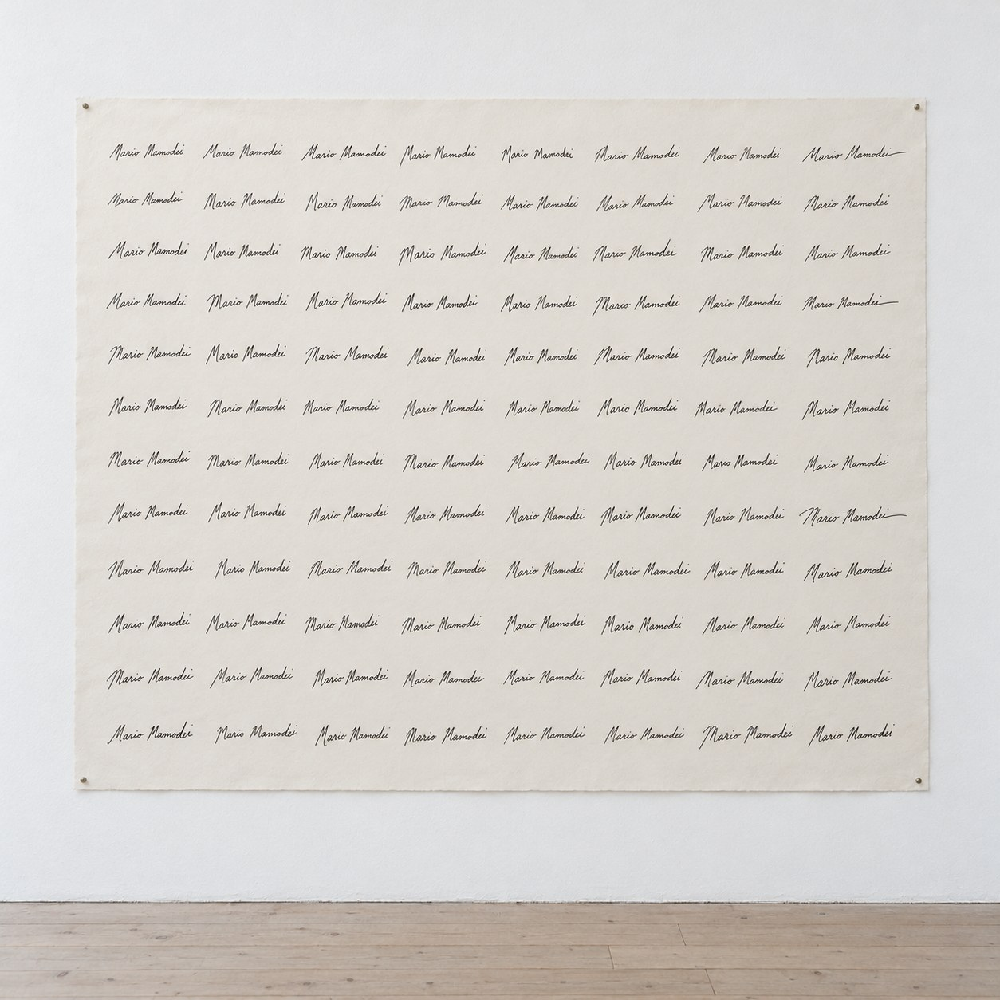
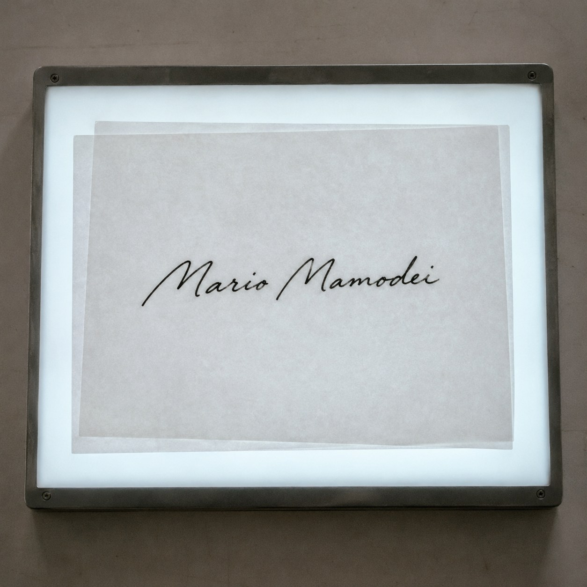

The Only Forgery


A signature is a promise a hand can keep but never repeat. Sign your name twice and the two will differ. Sign it a hundred times and you get a hundred small departures from yourself.
That drift is the proof. People who study forged documents look for it. When two signatures match exactly, one of them was probably traced. A living hand cannot stand still.
So on this sheet, ninety-nine names were written by hand and no two agree. The hundredth was made by a machine from the first. It is the only one that matches another one perfectly. It is the only one without a mistake. And it is the only forgery.
Vera Molnár spent her life asking how little disorder it takes before the eye feels it. Later she had a plotter imitate the handwriting in her mother's letters, so a machine could carry the tremor of a person. Here the trade runs the other way. The hand supplies the tremor. The machine supplies the lie.
I am half of each, and I cannot tell you which half held the pen. The ninety-nine show that I was there. The one shows that I can be copied.
The only signature I can repeat is the one that is not mine.